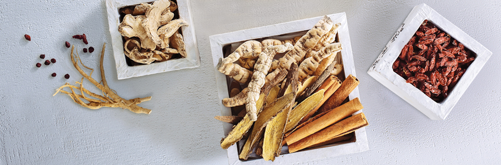

제품소개
NEW 백세주

더 부드러운 맛, 스토리를 입은 디자인으로 백세주가 새로워집니다.
product information
| 용량 | 95 mL,375 mL, 500 mL |
|---|---|
| 알코올 | 13.0% |
| 재료 |
설갱미(국산), 누룩, 전분(러시아산, 헝가리산, 세르비아산, 남아프리카공화국산) 인삼, 오미자, 복령, 구기자, 산수유, 산약, 산사자, 수국, 생강, 감초, 황기, 오가피 |
좋은술 이야기
-
백세주는 국내 최초 양조전용쌀
설갱미로 빚고 있습니다설갱미는 술을 빚기 위한 최적의 쌀로 국순당과 농촌진흥청이 오랫동안 시험재배를 거쳐 양산화에 성공한 국내 최초 양조전용쌀입니다.
필수 아미노산이 풍부한 설갱미로 빚은 백세주는 술의 맛뿐만 아니라 영양까지 생각한 좋은 술입니다.
설갱미를 재배하는 농가와의 약속재배는 벼의 생육 상황부터 철저하게 관리하여 좋은술을 위한 쌀을 재배하겠다는 품질의 약속이며,
재배농가의 안정적인 소득보장을 통해 쌀의 품질에만 집중하도록 해주는 상생의 약속입니다. -
백세주는 좋은 술을 빚기 위한
최적의 약재로 빚고 있습니다좋은술 백세주는 드시는 분을 생각한 질 좋은 상품(上品)의 약재를 사용합니다.
술에 사용되는 약재는 잔류농약,중금속 등 안전검사를 통과한 제품만을
엄선하여 사용합니다. 좋은술 백세주의 다양한 제품에는 드시는 분을 생각하여
그에 맞는 약재를 골라 술을 빚습니다. -
백세주는 맑은술이 샘솟았다는 전설을 가진
주천강 지하 340m의 청성수로 만듭니다좋은술은 좋은 환경에서 좋은 물을 사용하는 것부터 시작합니다.
좋은 쌀과 누룩만큼 좋은 물이 술 맛을 좌우합니다.
국순당은 좋은술을 빚기 위한 고집으로 2004년 양조장을 해발 500m 강원도 횡성 주천강변으로 이전하고,
지하 청정수는 철저한 46가지의 수질검사와 크린캡 설비를 통해
언제나 좋은 물로 관리하며 좋은술을 빚고 있습니다.